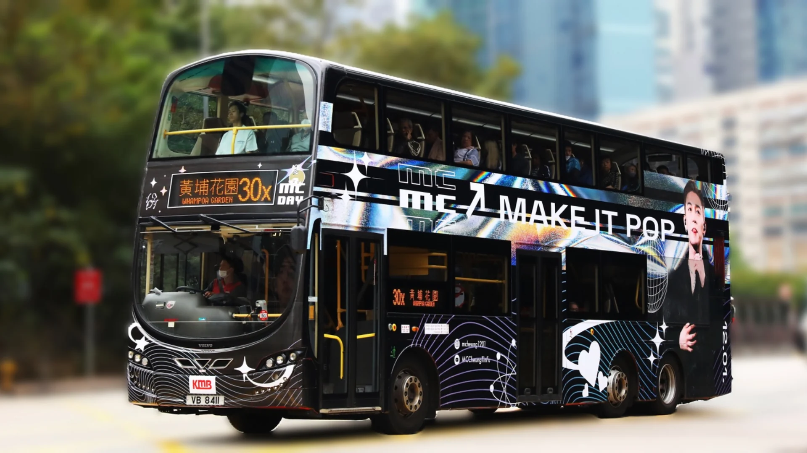

口岸廣告
出入境人流 · 跨境消費
MEDIA DIRECTORY
從市場覆蓋、受眾接觸到媒體形式，探索香港本地及跨境戶外廣告機會。
廣告網絡（Network Package）指跨位置或媒體的組合投放。
出入境人流 · 跨境消費

城際旅客 · 長途出行

粵港交通走廊

日常通勤 · 鐵路網絡

全港道路 · 區域覆蓋

港島地標 · 街道景觀

指定站點 · 街道曝光

核心商圈 · 動態展示
沒有完全符合條件的媒體類別。可調整篩選，或直接查詢其他方案。
PLAN WITH HANABI
按市場、受眾及投放需求，探索更多媒體選擇。